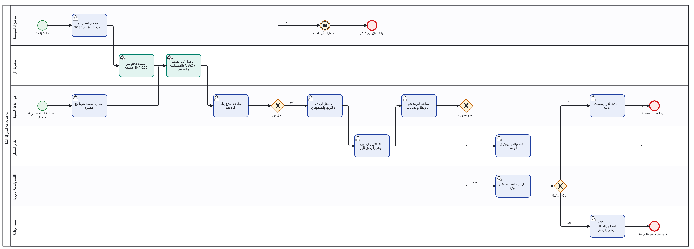

تقرير المرحلة T (المرحلة 4 من خطة المراحل الخمس): الوثائق والأمن. مخططات سير العمل BPMN وبطاقاتها، الملف التقني والأمني الموحّد، قاموس البيانات 2.0، كراس الشروط بمواصفات الأجهزة والخوادم، تحصين الخادم مقيسا قبل وبعد، وعرض اللجنة بأسلوب Prezi.
المرحلة لا تضيف وظيفة للمنظومة ولا ترحيلا: تحوّل ما أُنجز إلى وثائق يمكن تسليمها للجنة وإدراجها في كراس الشروط، وتقيس أمن الخادم بأدوات معروفة بدل التقييم الذاتي وحده. الترتيب المعتمد: 11 ثم 14 ثم 20 ثم 12 (ومعه 28) ثم 15 ثم 13.
| البند | التسليم | الملف في ملفات المشروع | الصفحات | المولّد في المستودع |
|---|---|---|---|---|
| 11 | ثلاثة مخططات BPMN 2.0 (من البلاغ إلى القرار، الإنذار الأولي لصاحب المؤسسة، الكارثة) وبطاقات وظيفية وغير وظيفية وتقنية | spec/e-Himaya_Fiches_BPMN.pdf و diagrams/bpmn/ | 29 | docs/deliverables/bpmn و cards |
| 14 | الملف التقني والأمني: مصفوفة المنافذ، 38 سرّا يجب تغييرها، التحصين، تعريف البروتوكولات، قائمة ما قبل الإطلاق | guide/e-Himaya_Securite_Technique.pdf | 11 | docs/deliverables/security |
| 20 | قاموس البيانات 2.0 مستخرج آليا من القاعدة بعد الترحيل 0088: 35 مخططا، 219 جدولا، 2586 عمودا، 133 جدولا بأمن الصفوف، 44 حقلا مشفّرا | database/e-Himaya_Dictionnaire_donnees.pdf | 122 | docs/deliverables/data-dictionary |
| 12 و 28 | كراس الشروط من الوضع الحالي إلى الهدف، بأرقام [SIM] حيث تنقص المعطيات، ومواصفات الأجهزة والخوادم | spec/e-Himaya_Cahier_des_charges.pdf | 15 | docs/deliverables/specification |
| 15 | سكربت التحصين وسكربت القياس وتقرير قبل وبعد | reports/hardening-report.html | — | infra/security |
| 13 | عرض اللجنة بأسلوب Prezi: خريطة رئيسية بسبع محطات، انتقال Morph في 19 شريحة، رجوع إلى الخريطة من كل محطة | presentation/e-Himaya_Presentation_Comite.pptx | 20 شريحة | docs/deliverables/presentation/build-committee.js |

| المقياس | قبل | بعد |
|---|---|---|
| مؤشر Lynis 3.0.9 | 57 | 82 |
| بنود Lynis | — | 28 محلولا، 18 باقيا (أغلبها نواة وsystemd لا توجد في بيئة القياس)، 1 جديد (FIRE-4513) |
| المنافذ المفتوحة (nmap) | — | TCP 80 و443، UDP 443 (QUIC) فقط |
| TLS (testssl.sh 3.2) | — | TLS 1.2 و1.3 فقط، دون ثغرة معروفة؛ تنبيه السلسلة يزول بإضافة الشهادة الجذرية المحلية |
infra/security/zap/run.sh جاهز)، وإعادة القياس على خادم حقيقي ومن جهاز آخر في الشبكة مدرجة في المؤجّل (T-1 و T-2). harden-host.sh --check بعد --apply يعطي 0 تغيير.versions.md البند 41، ودليلا التثبيت (فحوص التحصين)، و backlog.md القسم 3.13.الدمج، ثم المرحلة 5: وثائق الإنتاج، وثيقة النشر، دراسة اللجنة، والأسئلة والأجوبة.